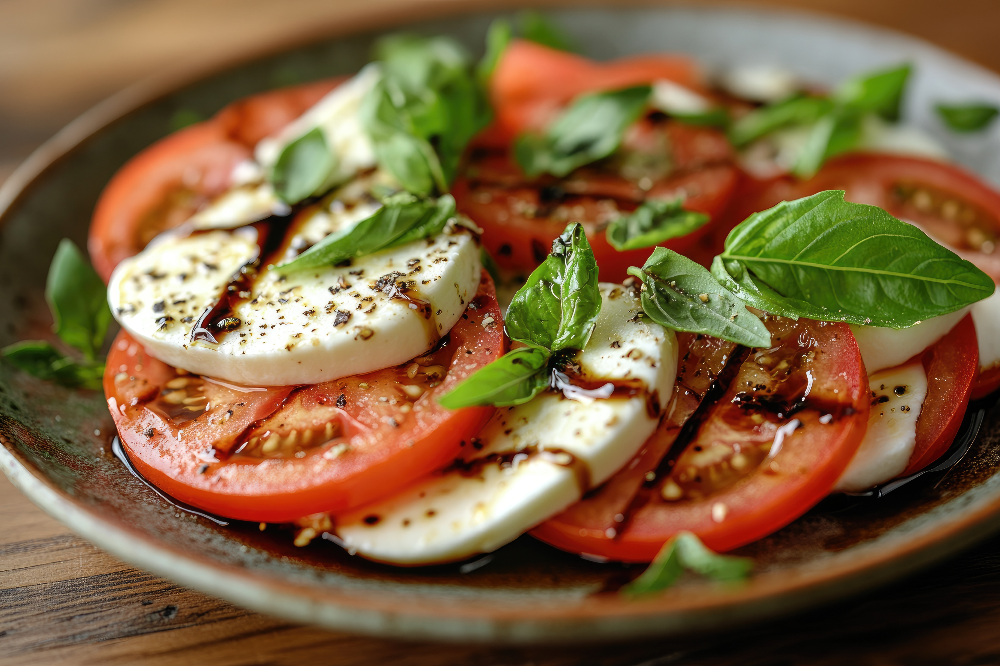

Caprese Salad with Balsamic Reduction
This caprese salad with tomatoes, fresh mozzarella, and basil is drizzled with a sweet balsamic reduction and olive oil. Easy, impressive, and delicious!
Home

Ingredients
- 1 cup balsamic vinegar
- ¼ cup honey
- 3 large tomatoes, cut into 1/2-inch slices
- 1 (16 ounce) package fresh mozzarella cheese, cut into 1/4-inch slices
- ¼ teaspoon salt
- ¼ teaspoon ground black pepper
- ½ cup fresh basil leaves
- ¼ cup extra-virgin olive oil
Steps
- Gather all ingredients. Stir balsamic vinegar and honey together in a small saucepan and place over high heat.
- Bring to a boil, reduce heat to low, and simmer until mixture has reduced to 1/3 cup, about 10 minutes. Set aside to cool.
- Arrange alternating slices of tomato and mozzarella decoratively on a serving platter.
- Sprinkle with salt and black pepper, tuck basil leaves around slices, and drizzle with olive oil and the balsamic reduction.